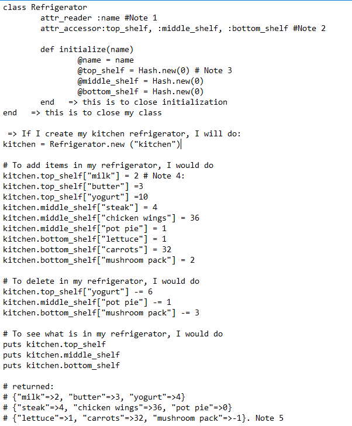
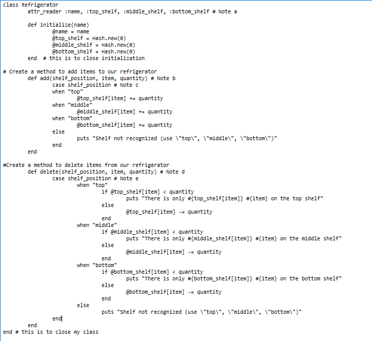
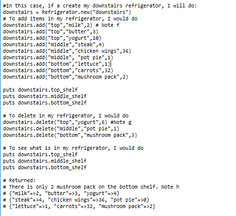

I decided to talk about Ruby classes and attributes because I believe this is subject difficult to grasp. Seeing is sometimes better than hearing, so let's compare two different ways of creating a "Refrigerator class.
For my comparison, I created two refrigerators with the same shelves and food inside.
|  |  |
|  |
What do we see?
If you look closely at the shorter way to create our Refrigerator class, we see that when we ask for what is in our refrigerator, one items is shown with a negative quantity (mushroom pack). This is because there is no control, the person has total liberty to make changes as he/she wants due to attribute accessor quality we have given.
On the other hand, the longer way to create the class includes methods and within one of the methods we are preventing someone from deleting more items than there are.
I did it by incorporing in my method: "if @top_shelf[item] < quantity puts "There is only #{top_shelf[item]} on the shelf"
Another thing worth mentioning is the way we are adding and deleting food items in the refrigerator as well how we are interrogating about the refrigerator's content.I personally find the class with method to be easier to understand, we don;t need to remember that we need sqaure bracket and an equal. But then, in these cases, we need to remember the name of the method and the number of arguments required. So, you can see, it is not perfect too...
Notes related to the first way to create a class.
Note 1: The refrigerator name is an attribute reader because nobody can change its name once created.
Note 2: These are attribute accessor meaning you can read or write what you want.
Note 3: We are creating an empty list having a key, the name of the food, and a variable, the quantity for the said food.
Note 4: In this instance, the key is the milk, the variable is the 2
Note 5: The program did exactly what the person said, even if it doesn't make sense to take out more than is in the refrigerator => there is no control in place
Notes related to the second way to create a class.
Note a: # They are attribute reader because nobody can change them once they have been created. You cannot change their name.
Note b: When we call the method add, we need to provide it with 3 arguments.
Note c: The case must have the name of the variable we are casing.
Note d: When we call the method delete, we need to provide it with 3 arguments.
Note e: The case must have the name of the variable we are casing.
Note f: We are calling the method add for our downstairs refrigerator.
Note g: We are calling the method delete for our downstairs refrigerator.
Note h: A message is printed for us but the program did not do anything else about it because we did not give any other instructions.